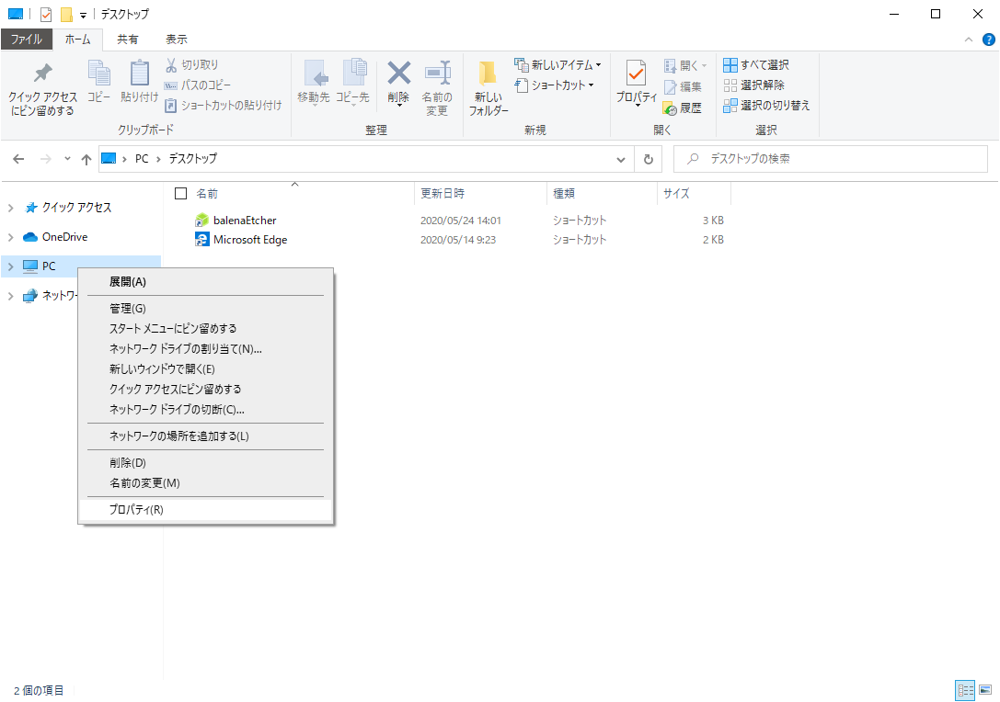
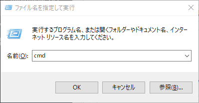

JAVA 프로그램 개발시 JDK 환경 변수 설정하기
JAVA 프로그램 개발시 JDK 환경 변수 설정하기
안녕하세요.
이번에 소개할 내용은 JAVA JDK 환경 변수 설정 입니다.
JDK와 이클립스를 설치는 되었지만 환경변수 설정을 하셔야만
제대로된 개발환경이 완성 되겠습니다.
그래서 이번에 개발환경을 완성시켜줄수 있는 JDK를 시스템 환경설정에 등록하는 방법과
이클립스에서 기본적으로 해주어야할 자바개발 환경 설정을 해보도록 하겠습니다.
처음 개발시작을 하실때 이것만 제대로 해주셔도 문제없이 개발을 하실수 있습니다.
이제 막 개발을 시작하거나 개발 초보분들은 이부분에서 많이 놓치시기 때문에
기본적으로 환경설정부터 해주시기 바랍니다.
그럼 이제 시스템 환경설정부터 차례대로 시작해 보겠습니다.

PC에서 오른쪽 클릭후 프로퍼티를 선택해 주세요.
왼쪽의 시스템 환경설정을 클릭해 주세요.
가장 하단 마지막 버튼이 환경변수 버튼을 눌러주세요.
그러면 위와같은 화면이 나온것을 확인하실수 있겠습니다.
신규버튼을 눌러주세요.
그런다음 아래와 같이 환경설정값을 세팅해 주시기 바랍니다.
1 | 변수명 : JAVA_HOME |
설정을 하셨으면 OK버튼을 눌러주세요.
그다음은 추가한 JAVA_HOME을 Path경로에 등록을 해줘야만 합니다.
Path를 선택후 편집을 눌러주시기 바랍니다.
위와같은 화면이 나오시면 신규추가를 누르시고 아래의 경로를 입력해서 설정후 OK를 눌러주시기 바랍니다.
1 | %JAVA_HOME%\bin |
그다음 CLASSPATH를 추가를 해줘야만 하기에 아래와 같이 등록해 주시기 바랍니다.
위와같이 입력후 OK버튼을 눌러주세요.
1 | 변수명 : CLASSPATH |
환경변수창도 OK버튼을 눌러주세요.
윈도우키 + R키를 누르시면 아래의 창이 열리게 되며 CMD를 입력후 OK버튼을 눌러주세요.


1 | # 터미널이 열리면 아래의 명령어를 입력해 주세요. |
자바 버전이 출력이 되시면 JAVA가 정상적으로 설치가 되어 있는것 입니다.
1 | # 터미널이 열리면 아래의 명령어를 입력해 주세요. |
위와같은 화면이 나오면 정상적으로 환경변수 설정이 끝났습니다.